That gap above the kitchen cabinets.
Everyone has one. Almost everyone stares at it wondering what to do.
It's not for lack of ideas, either.
It's that most of the obvious ideas age a kitchen overnight.
Here are 15 that don't.


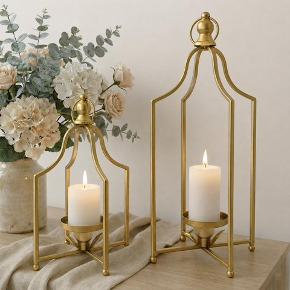
12.5" & 16.5" Timeless Cozy Decorative Lanterns Set of 2, Handcrafted Metal Iron Candle Holders
Shop on AmazonHow to Pick the Right Approach for Your Kitchen
Three questions settle most of this.
What's the kitchen's actual style? Modern wants different above-cabinet decor than farmhouse or transitional. Staying consistent is what makes it feel intentional.
How tall are the cabinets? Short cabinets need taller decor. Tall cabinets need more breathing room. Scale matters more here than almost anywhere else in the kitchen.
Contrast, or continuity? Contrast tends to work better in neutral kitchens. Continuity works better in ones that are already colorful. Mixing both without a plan is how you end up with visual chaos.
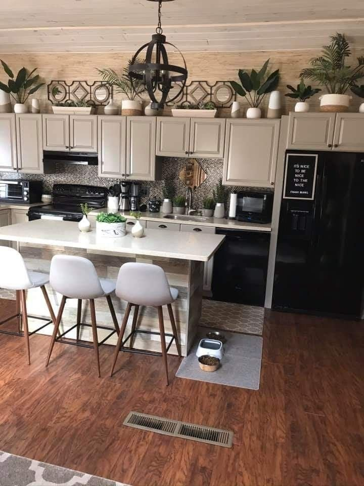
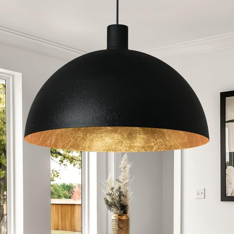
20 Inch Large Black Chandelier Dome, Bold Matte Black and Gold Pendant Light, Hanging Fixture
Shop on Amazon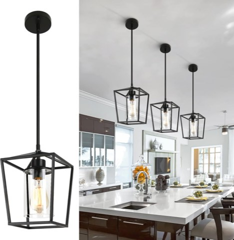
Black Pendant Light for Kitchen Island, Farmhouse Metal Cage Hanging Light
Shop on AmazonWhy This Space Matters More Than You'd Think
Does anyone actually notice the space above kitchen cabinets?
Yes. Everyone does. They just don't register it as a decision.
Your eye travels upward in a kitchen naturally, especially once upper cabinets stop short of the ceiling.
Leave it empty and the kitchen looks unfinished. Leave it cluttered and it looks chaotic.
Style it well, and it quietly elevates the whole room — the same way the right throw pillows finish off a living room.
The decor that dates this space fastest: tiny knickknacks you can't even see from the floor, fake grapes, trailing plastic ivy, matching word signs everywhere.
Dated decor almost always comes from filling space instead of styling it. Those are two very different things.
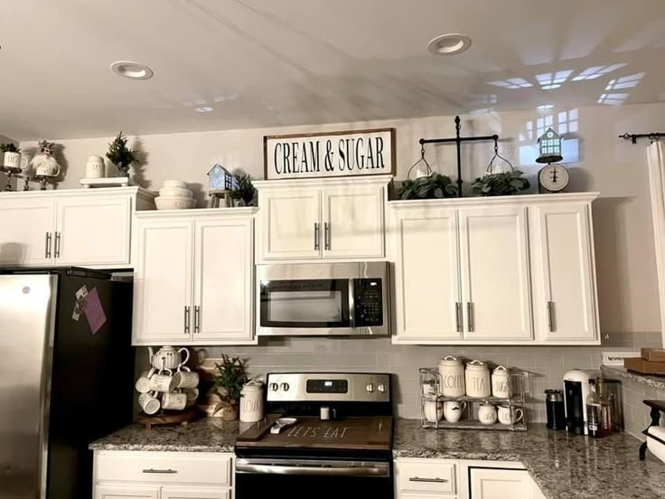
1. Leave It Empty, On Purpose
Start with the boldest option on this list: do nothing.
Empty space counts as decor too, and it's one of the most underused options here.
Not every cabinet run needs styling.
A little strategic emptiness actually makes the sections you do style stand out more by comparison.
If your kitchen already feels busy, stepping back is often the right move.
It also saves you money and time, which is more than any of the other 14 ideas on this list can claim.
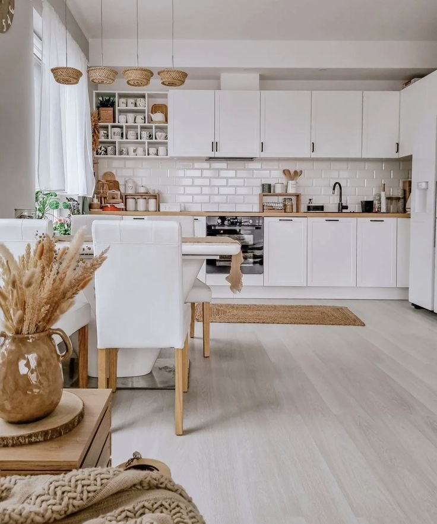

Ceramic Vase, Modern Sculptural Textured Vase, Beige Abstract Flower Vase for Home Decor
Shop on Amazon
DOWAN 5.7" Rustic Vintage Ceramic Vase, Distressed Textured Minimalist Farmhouse Pottery, Gray
Shop on Amazon2. Go Monochrome for a Designer Look
This is one of the most reliable ways to make the space read as genuinely high-end.
Grouping similar tones together creates an immediate sense of calm.
All-white ceramics. All-wood tones. All-black accents. Any of these work on their own.
The trick is picking one lane and staying in it, instead of mixing several.
Carry the palette through pitchers, greenery, even the window treatment below, and you'll see how far one consistent color story stretches.
It's one of the easiest ways to make a builder-grade kitchen look like it was professionally designed, without touching a single cabinet door.
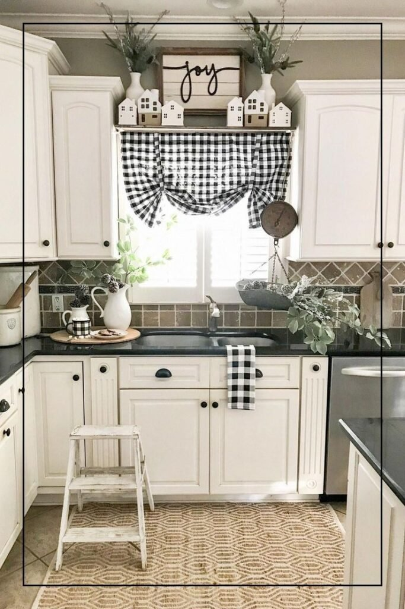
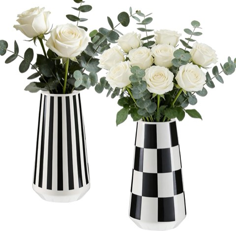
2 Pcs Black and White Ceramic Vase, Mid Century Modern Striped & Checkered Vases
Shop on Amazon3. Bring in Neutral Pitchers and Jugs
Pitchers bring real soft curves into a kitchen that's otherwise all hard lines and straight edges.
Stoneware pitchers in neutral glazes, with a little visible imperfection in the finish, work best.
They feel collected, not like something bought as a matching set.
Pair with a trailing plant and the whole arrangement reads as effortless, and more expensive than it actually was.
Mix two or three sizes rather than a single matching set, and the grouping stops looking like it came off one shelf at a store.
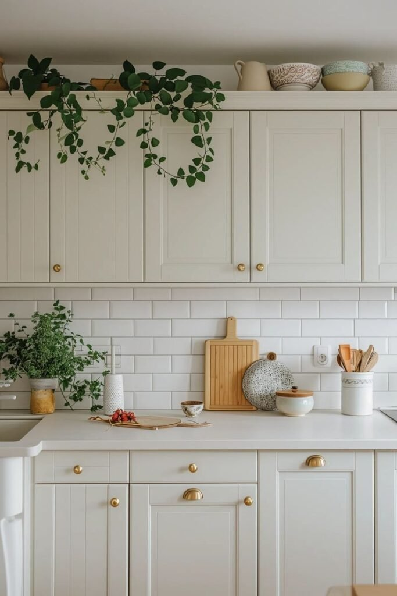
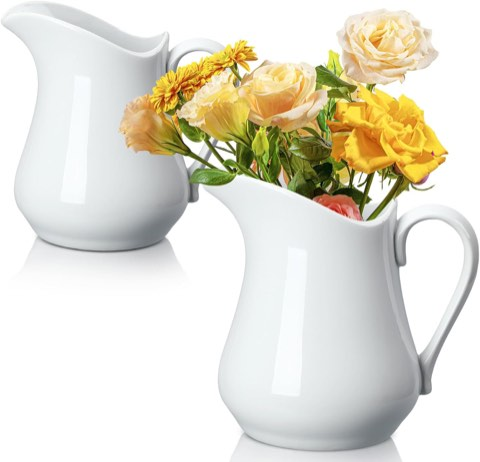
Domensi 2 Pcs 34oz White Ceramic Pitcher Vase, Farmhouse Jug Vase, Rustic Ceramic Pitchers with Handle
Shop on Amazon4. Add Tall Stems and Structural Pieces
Architectural touches feel genuinely timeless, in a way trendier decor never quite manages.
Tall dried stems, candlesticks, maybe a single statement piece like a round clock.
All of it adds real structure up there.
This works especially well in classic or traditional kitchens, where a little formality above the cabinets matches the rest of the room.
Height does the real work. Tall stems in matching vases pull the eye upward the same way a taller piece of furniture would.
Dried pampas grass especially has staying power — it holds its shape for years and never needs watering or swapping out.
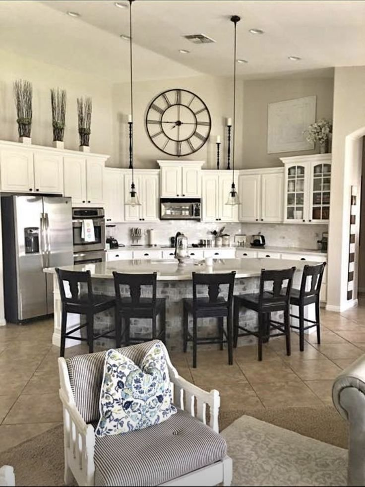
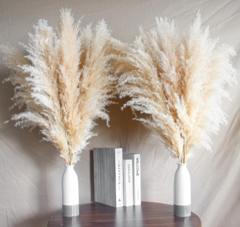
10 Stems 30" Dried Pampas Grass Decor, Tall Boho Neutral Home Decor Bouquet for Floor Vase
Shop on Amazon5. Keep Seasonal Touches Subtle
Seasonal decor ages a kitchen fast once it goes overboard.
The fix: lean into texture and tone instead of themed signs and full displays.
Dried branches in fall. Light greenery in spring. Neutral stems in winter.
All of it keeps the seasonal nod subtle instead of overwhelming.
A little garland, some warm lights, one festive sign — that's plenty.
If a piece says something as specific as "Pumpkin Spice," it doesn't belong up there.
Swap the seasonal layer out and leave the rest of the display standing — that's how you know the base styling was solid to begin with.
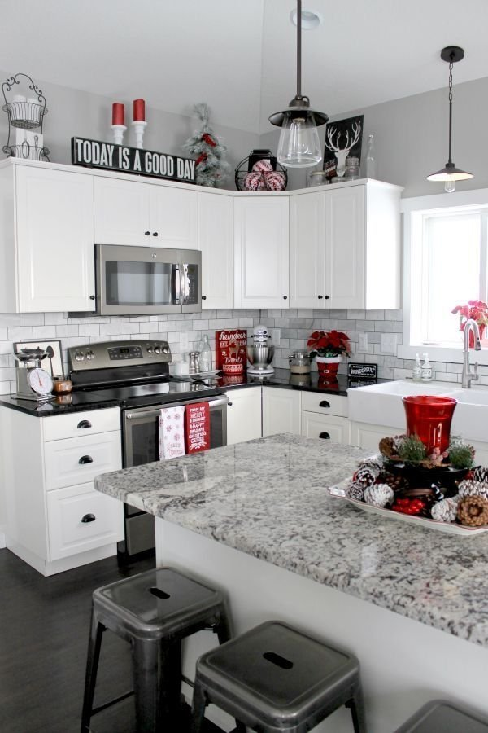
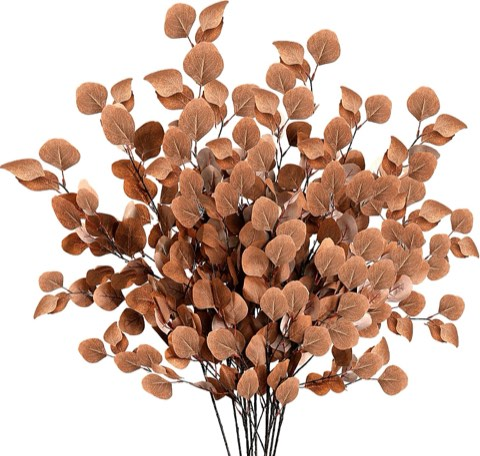
Sggvecsy 6 Pcs Fall Artificial Eucalyptus Stems, Long Silver Dollar Leaves, Dark Brown
Shop on Amazon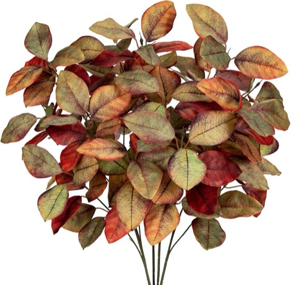
Briful 5 PCS Fall Leaves Artificial Magnolia Leaf Branches, 26" Autumn Fake Plant Stems for Vase
Shop on Amazon6. Add Warmth With Wood Crates and Bowls
Wood brings a warmth up there that almost nothing else matches.
Long, shallow dough bowls create a clean horizontal line that balances taller cabinets.
Stacked wooden crates do similar work while adding genuine storage — tuck jars, tins, and smaller vessels inside and the look stays rustic instead of cluttered.
Style either one with almost nothing, a few neutral spheres, or one sculptural object.
Sometimes the wood texture alone is enough to carry the whole section.
Mixing a lighter wood tone against darker cabinets, or the reverse, adds contrast without needing a single extra object.
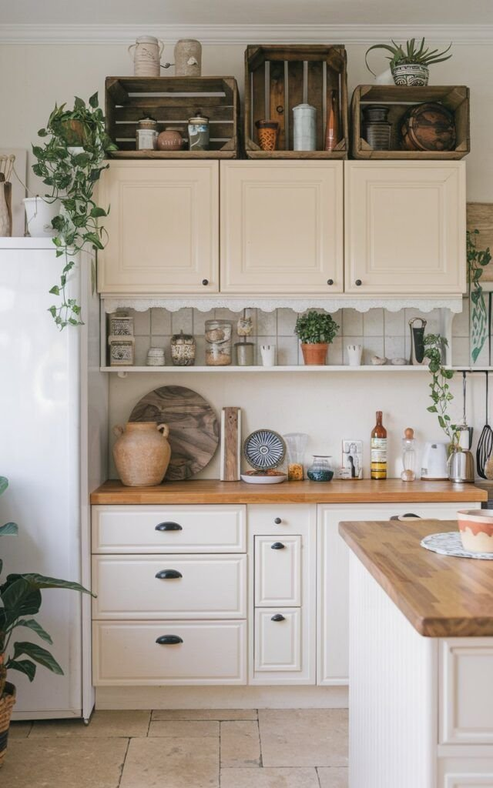

FANDOS Wooden Dough Bowl for Decor, 17¾ in Long Hand Carved Paulownia, Large Rustic Decorative Bowl
Shop on Amazon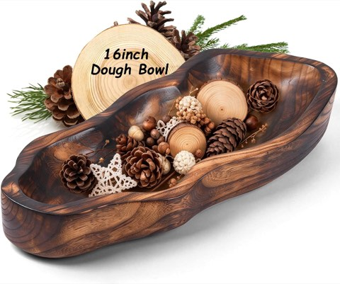
16 Inch Wavy-Edge Wooden Dough Bowl, Large Decorative Bowl for Home Decor
Shop on Amazon7. Group Framed Signs Like Art
This one surprises people every time, but yes — framed signs genuinely work up here when the scale and grouping are right.
Sit them upright along the shelf instead of hanging one centered piece.
Let a run of frames overlap slightly with the decor around them. It reads as collected, not like a showroom kitchen.
Mix in a woven wreath, a lantern, maybe a small windmill accent, and any lingering showroom feeling disappears fast.
Keep the frame finishes consistent — all black, all wood, all white — even if the sign styles themselves vary quite a bit.

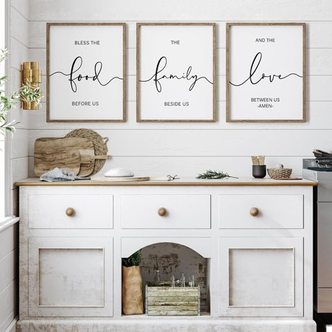
Heiple Set of 3 Framed Farmhouse Signs, Kitchen Wall Decor for Dining Room, Wood Signs 11"x14"
Shop on Amazon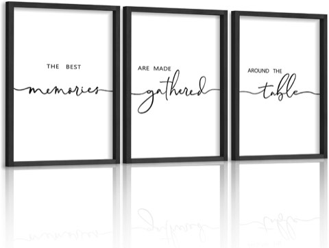
Houmury Set of 3 Framed Wall Art, Farmhouse Wall Decor 11"x14", Kitchen Wall Decor Wood Signs
Shop on Amazon8. Try Sculptural Objects That Feel Like Art
This is one of the better moves if you want something genuinely modern up there.
Sculptural objects with organic shapes — curves, texture, neutral tones — add interest without shouting for attention.
Stone-inspired decor, abstract ceramic forms, matte resin objects all work well here.
So does something with a little more personality — a single sculptural figure can carry an entire section on its own.
Add a small strand of warm string lights behind the piece and it gets a soft glow after dark, instead of disappearing into shadow.
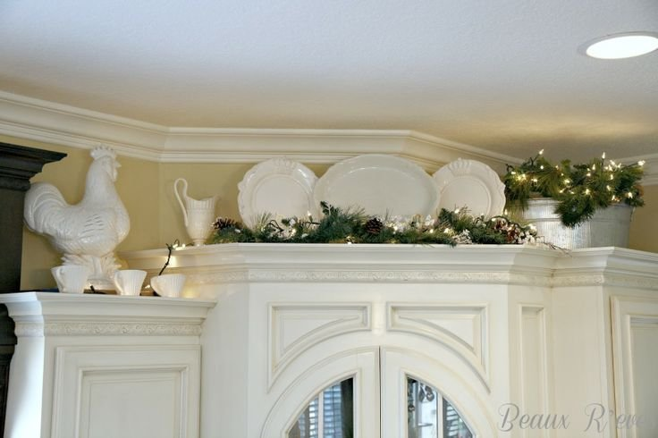
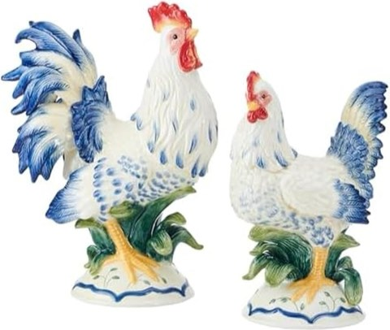
Fitz and Floyd Ceramic Rooster and Hen Figurine, Sicily Blue, Rooster 12.75-Inch and Hen 10.5-Inch
Shop on Amazon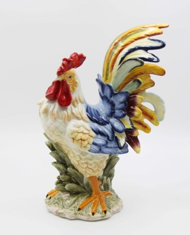
StealStreet 15.75" Porcelain Painted Colorful Rooster Bird Figurine Statue
Shop on Amazon9. Style Cookbooks Like Decor
Cookbooks work above cabinets, but only when they look intentional, not like an overflow shelf.
Stack them horizontally. Limit the color palette to neutrals. Add one single object on top to finish the look.
If your cookbook collection currently looks like a rainbow exploded, it belongs on a regular shelf instead.
This spot only works with real color discipline.
A single plant or small object anchoring one end of the stack keeps it from reading as a leftover pile waiting to be put away.
10. Bring in Antique and Vintage Finds
Nothing warms up a kitchen faster than something genuinely old.
Vintage pitchers, old bread boards, antique jars — all of it does real work here.
Restraint is the key. One or two pieces per section read as collected. A full shelf of antique finds starts to feel like a flea market display.
A pair of vintage lanterns flanking some glass and a little trailing greenery shows exactly how much warmth a few well-chosen old pieces can add.
Thrift stores and estate sales are the best source for this — new decor made to look old rarely has the same weight or finish.
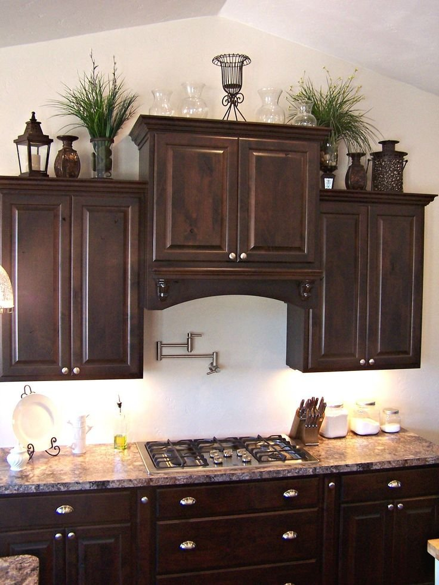

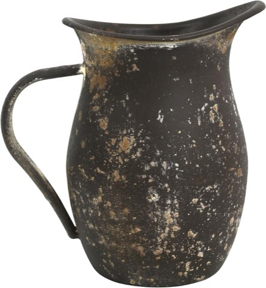
Vintage Country Metal Flower Vase, Farmhouse Decorative Milk Can Pot, Rustic Pitcher Jug
Shop on Amazon11. Use Glass for Light and a Low-Risk Choice
Glass decor works beautifully up here, as long as it stays simple.
Clear or lightly tinted glass in rounded shapes reflects light and keeps the whole space feeling open.
Go bigger than feels natural. A few larger glass vessels read as considered, while a cluster of small ones starts to look like clutter fast.
It's also one of the lowest-risk choices on this whole list. Glass never really goes out of style the way more decorative materials can.
12. Scale Up With Oversized Woven Baskets
Baskets can absolutely look dated. They don't have to.
The difference comes down entirely to scale.
Large-scale woven baskets with clean, simple shapes read as architectural and calm. Small baskets scream clutter immediately.
These work especially well in farmhouse kitchens, transitional spaces, and warm neutral color schemes.
As a bonus, they hide dust far better than shiny decor ever does.
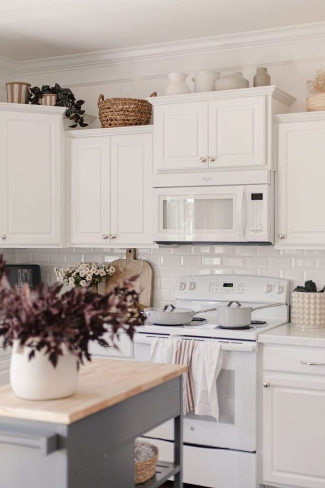
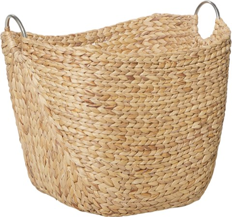
Deco 79 Seagrass Handmade Decorative Storage Basket, Large Woven Basket Organizer with Metal Handles, 21" x 17" x 19"
Shop on Amazon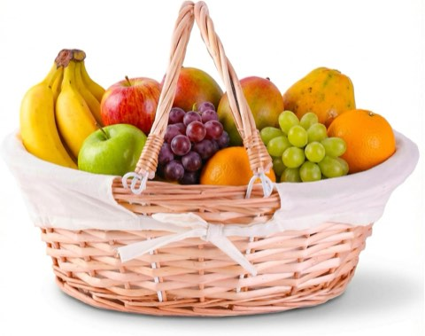
Vintiquewise Natural Wicker Picnic Basket with Handle, Handcrafted Decorative Wicker Storage Basket
Shop on Amazon13. Use Greenery Sparingly
Greenery works well up here, but only with real restraint.
Less greenery almost always reads as more expensive than a lot of it.
Skip trailing vines entirely. Faux olive branches, eucalyptus stems, or one sculptural plant do far more with far less.
It doesn't need to stand alone either — a single potted sprig can hold its own inside a fuller, more collected display, as long as it isn't competing with everything else up there.
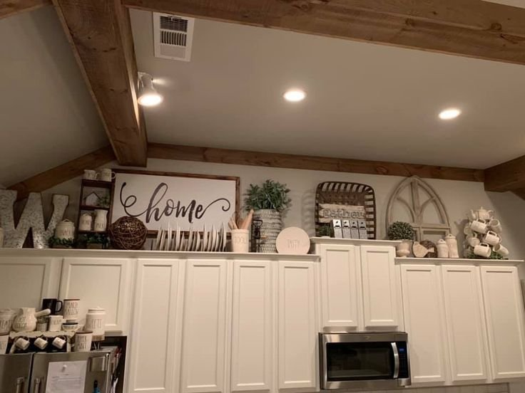
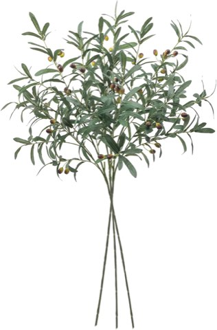
SHACOS 3 PCS 39" Fake Olive Tree Branches, Large Tall Artificial Greenery Stems for Vase
Shop on Amazon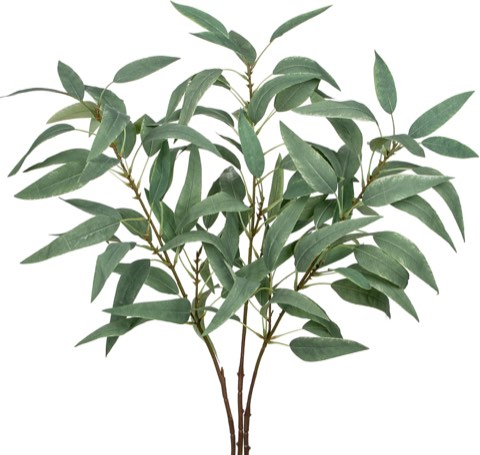
Faux Eucalyptus Stems, Willow Eucalyptus Leaves 34" Long, 3 Pcs Artificial Greenery Stems
Shop on Amazon14. Add Height With Tall Ceramic Vases
Tall ceramic vases add real height without adding clutter.
They work especially well when cabinets stop well short of the ceiling.
Matte finishes age better than glossy ones — soft whites, warm taupes, muted charcoal tend to hold up longest without feeling trendy.
For it to read as intentional instead of random: stick to odd numbers like three or five, vary the heights slightly, and keep the palette tight.
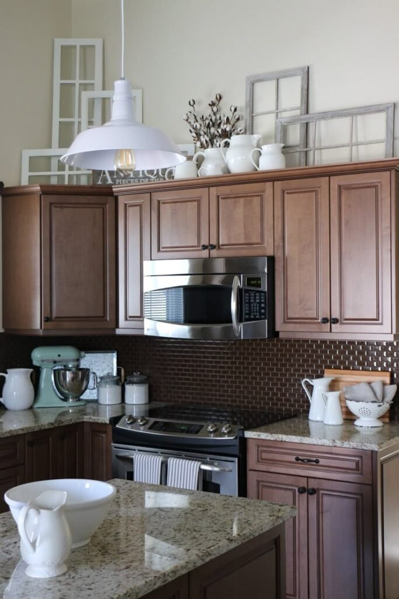
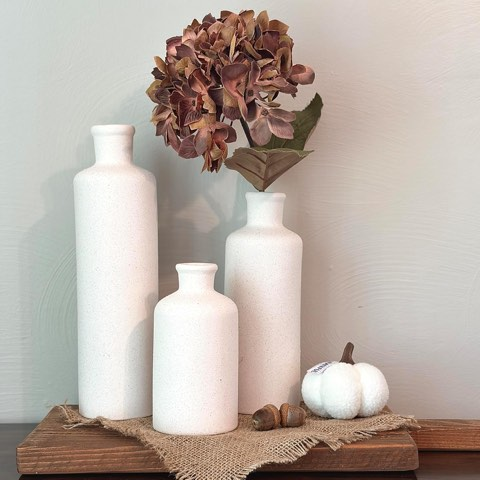
Tall Off-White Ceramic Vase Set of 3 - Modern Farmhouse Decor Vases for Living Room, Coffee Table & Shelf Styling
Shop on Amazon15. Let a Light Fixture Do the Work
Sometimes the best decor above a cabinet run isn't decor at all.
A statement pendant light, or a tall fixture, visually fills the vertical space on its own.
It pulls the eye upward and makes standard-height cabinets read as taller than they actually are.
One fixture, solving three problems at once: filling dead space, adding style, and actually improving the lighting.
The Real Rule Here
Above-the-cabinet decor doesn't have to feel awkward, outdated, or overwhelming.
It should quietly support the kitchen. Not steal the spotlight. Not collect dust like a forgotten attic shelf.
Fewer, larger pieces and timeless materials beat a crowded shelf of small items every single time.
If you're ever unsure whether something belongs up there, ask one question: will this still look good in five years?
Hesitate on the answer, and it's probably worth skipping.
A well-styled kitchen always feels intentional. Never overdecorated.